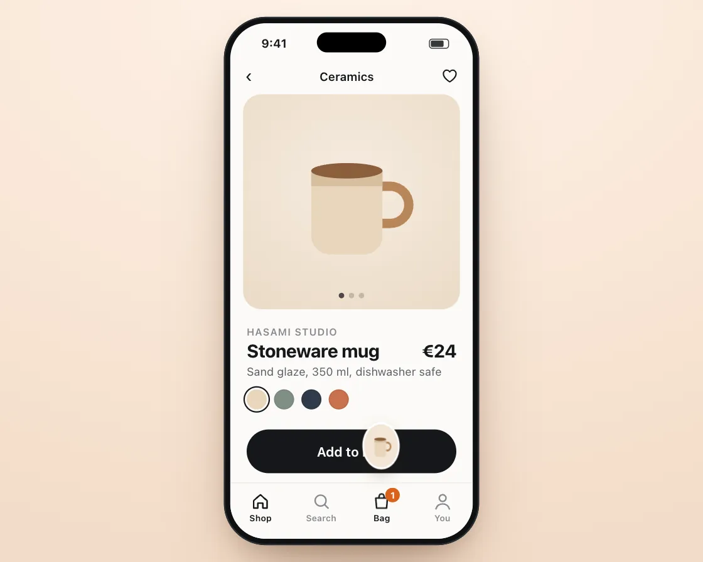

Squash & stretch bounce
Squash & stretch bounce is a DOM effect: stretch with speed, squash on impact. One plain JavaScript file with no dependencies; add it with npx motion-library add squash-bounce.

Open it live, tune it and copy the code
What is Squash & stretch bounce?
Tap Add to bag and a mug thumbnail arcs onto the bag icon, squashes, bounces and drops in.
How does Squash & stretch bounce work?
It stretches along its velocity in flight and squashes on impact while keeping its area; each bounce keeps a fraction of its energy.
How do I add Squash & stretch bounce to my website?
- In your project folder, run
npx motion-library add squash-bounce. It writesanimations/squash-bounce.js. Needs Node 18 or newer. - Import it and call it with a container element that has a size:
import fx from './animations/squash-bounce.js'; const stop = fx(document.querySelector('#hero')); - Call
stop()to clean up, for example when a component unmounts.
Every setting below is also a flag, so you can install it already tuned: npx motion-library add squash-bounce --gravity 5000.
What settings can I tweak?
| Setting | Flag | Default | Range | Step |
|---|---|---|---|---|
| Gravity | --gravity | 2400 | 600 to 5000 | 50 |
| Bounce | --bounce | 0.6 | 0.3 to 0.95 | 0.01 |
| Squash | --squash | 0.35 | 0 to 0.7 | 0.01 |
Specifications
- Renderer
- DOM (CSS and the Web Animations API)
- Category
- Springs & physics
- Dependencies
- None
- File size
- 12.3 KB, unminified
- Interactive
- Yes: it responds to the pointer
- Reduced motion
- Respects prefers-reduced-motion
- Licence
- MIT-0: use it anywhere, no credit needed
Source code
// Squash & stretch: on a shop's product page a finger taps "Add to bag" and a little thumbnail of the mug is thrown in an arc onto the bag icon in the tab bar, where it squashes, bounces twice and drops in.
// In flight it stretches along its speed; on impact it squashes while keeping its area, so it reads as soft, not shrinking. Each bounce keeps a fraction of its energy, and the bag itself gives a little under the hit, so the add feels like it landed somewhere.
const PARAMS = { gravity: 2400, bounce: 0.6, squash: 0.35 };
export default function (stage) {
const reduce = matchMedia('(prefers-reduced-motion: reduce)').matches;
const K = 'sqb', BG = 'radial-gradient(120% 100% at 50% 0%, #1b1b1e, #0d0d0f)', SC = '#fbfaf7', SBC = '#15171a';
const mug = w => `<svg width="${w}" height="${w}" viewBox="0 0 100 100"><path d="M68 40 h7 a12 12 0 0 1 0 24 h-7" fill="none" stroke="#b9875a" stroke-width="6"/><path d="M24 30 h46 v42 a12 12 0 0 1 -12 12 h-22 a12 12 0 0 1 -12 -12z" fill="#e9d6bd"/><path d="M24 30 h46 v10 h-46z" fill="#d8bf9e"/><ellipse cx="47" cy="30" rx="23" ry="5" fill="#8b5e3c"/></svg>`;
const ic = d => `<svg width="22" height="22" viewBox="0 0 24 24" fill="none" stroke="currentColor" stroke-width="1.8" stroke-linecap="round" stroke-linejoin="round">${d}</svg>`;
const CSS = `.sqb-top{position:absolute;left:0;right:0;top:46px;display:flex;justify-content:space-between;align-items:center;padding:0 16px;font-size:13px;font-weight:600}.sqb-top span{font-size:20px;font-weight:400}
.sqb-hero{position:absolute;left:14px;right:14px;top:78px;height:236px;border-radius:20px;background:radial-gradient(90% 80% at 50% 40%,#f6ece0,#ead9c4);display:grid;place-items:center}
.sqb-dots{position:absolute;bottom:12px;left:0;right:0;display:flex;gap:5px;justify-content:center}.sqb-dots i{width:6px;height:6px;border-radius:50%;background:#15171a;opacity:.2}.sqb-dots i:first-child{opacity:.75}
.sqb-info{position:absolute;left:18px;right:18px;top:328px}.sqb-info small{font-size:11px;color:#8a8a8f;font-weight:600;letter-spacing:.06em;text-transform:uppercase}.sqb-info b{display:flex;justify-content:space-between;font-size:20px;font-weight:720;letter-spacing:-.01em;margin-top:2px}.sqb-info p{margin:4px 0 0;font-size:12.5px;color:#5b6066}
.sqb-sw{display:flex;gap:8px;margin-top:12px}.sqb-sw i{width:22px;height:22px;border-radius:50%;box-shadow:inset 0 0 0 1px rgba(0,0,0,.08)}.sqb-sw i:first-child{box-shadow:0 0 0 2px #fbfaf7,0 0 0 3.5px #15171a}
.sqb-btn{position:absolute;left:18px;right:18px;top:446px;height:48px;border-radius:24px;background:#15171a;color:#fff;display:flex;align-items:center;justify-content:center;gap:8px;font-size:14.5px;font-weight:650;transition:transform .16s cubic-bezier(.23,1,.32,1)}
.sqb-tab{position:absolute;left:0;right:0;bottom:0;height:62px;border-top:1px solid #ecebe7;background:rgba(251,250,247,.96);display:flex;justify-content:space-around;padding-top:9px;box-sizing:border-box;color:#8a8a8f;z-index:4}
.sqb-tab span{position:relative;width:40px;display:flex;flex-direction:column;align-items:center;font-size:9.5px;font-weight:600;gap:2px}.sqb-tab .on{color:#15171a}
.sqb-bag svg{transform-origin:50% 100%;will-change:transform}.sqb-badge{position:absolute;left:24px;top:-4px;min-width:16px;height:16px;border-radius:8px;background:#d9601a;color:#fff;font-size:10px;font-weight:700;display:grid;place-items:center;font-style:normal}
.sqb-it{position:absolute;left:0;top:0;width:42px;height:42px;margin:-21px 0 0 -21px;border-radius:50%;background:#f3e6d6;box-shadow:0 0 0 2px #fff,0 6px 14px rgba(60,30,10,.25);display:grid;place-items:center;z-index:5;opacity:0;will-change:transform}`;
const HTML = `<div class="sqb-top"><span>‹</span>Ceramics<span>♡</span></div><div class="sqb-hero">${mug(170)}<div class="sqb-dots"><i></i><i></i><i></i></div></div>
<div class="sqb-info"><small>Hasami studio</small><b>Stoneware mug<span>€24</span></b><p>Sand glaze, 350 ml, dishwasher safe</p><div class="sqb-sw"><i style="background:#e9d6bd"></i><i style="background:#7f8f86"></i><i style="background:#2f3a4a"></i><i style="background:#c9714d"></i></div></div>
<div class="sqb-btn">Add to bag</div>
<div class="sqb-tab"><span class="on">${ic('<path d="M4 11l8-7 8 7v9h-5v-6H9v6H4z"/>')}Shop</span><span>${ic('<circle cx="11" cy="11" r="6.5"/><path d="M16 16l4 4"/>')}Search</span><span class="sqb-bag on">${ic('<path d="M5 8h14l-1 12H6z"/><path d="M9 8V6a3 3 0 0 1 6 0v2"/>')}<em class="sqb-badge">1</em>Bag</span><span>${ic('<circle cx="12" cy="8" r="4"/><path d="M4 21c1-4 4-6 8-6s7 2 8 6"/>')}You</span></div>
<div class="sqb-it">${mug(32)}</div>`;
// ── phone shell: a 280 × 580 phone drawn in CSS, scaled to fit the stage (screen is 266 × 566)
const root = document.createElement('div');
root.className = K + '-root';
root.innerHTML = `<style>
.${K}-root{position:absolute;inset:0;overflow:hidden;background:${BG};font-family:system-ui,-apple-system,"Segoe UI",sans-serif;color:#15171a;user-select:none;-webkit-user-select:none}
.${K}-ph{position:absolute;left:50%;top:0;width:280px;height:580px;border-radius:46px;background:#0f1113;box-shadow:inset 0 0 0 1.5px #3a3f46,0 0 0 1px rgba(255,255,255,.13),0 40px 80px -30px rgba(0,0,0,.8);transform-origin:50% 0}
.${K}-sc{position:absolute;inset:7px;border-radius:39px;overflow:hidden;background:${SC};isolation:isolate;touch-action:none}
.${K}-is{position:absolute;left:50%;top:17px;width:76px;height:22px;margin-left:-38px;border-radius:12px;background:#000;z-index:30}
.${K}-sb{position:absolute;left:0;right:0;top:0;height:44px;padding:0 26px 0 34px;display:flex;align-items:center;justify-content:space-between;font-size:13px;font-weight:650;z-index:29;pointer-events:none;color:${SBC}}
.${K}-sb i{width:22px;height:11px;border-radius:3.5px;border:1.2px solid currentColor;box-sizing:border-box;padding:1px;opacity:.85}.${K}-sb i:after{content:"";display:block;height:100%;width:78%;background:currentColor;border-radius:1.5px}
.${K}-f{position:absolute;left:0;top:0;width:34px;height:34px;margin:-17px 0 0 -17px;border-radius:50%;background:rgba(60,60,67,.32);box-shadow:0 0 0 1.5px rgba(255,255,255,.85),0 4px 12px rgba(0,0,0,.18);z-index:40;pointer-events:none;opacity:0;transition:opacity .2s}
${CSS}
</style><div class="${K}-ph"><div class="${K}-sc"><div class="${K}-sb"><span>9:41</span><i></i></div>${HTML}<div class="${K}-f"></div></div><div class="${K}-is"></div></div>`;
stage.append(root);
const $ = s => root.querySelector('.' + K + '-' + s), $$ = s => [...root.querySelectorAll('.' + K + '-' + s)];
const phone = $('ph'), scr = $('sc'), fingerEl = $('f');
let scale = 1;
const fit = () => { const W = stage.clientWidth, H = stage.clientHeight; scale = Math.min(H * 0.94 / 580, W * 0.9 / 280); phone.style.transform = `translate(-50%, ${(H - 580 * scale) / 2}px) scale(${scale})`; };
const ro = new ResizeObserver(fit); ro.observe(stage); fit();
const finger = (x, y, on, press) => { fingerEl.style.opacity = on ? 1 : 0; fingerEl.style.transform = `translate(${x}px,${y}px) scale(${press ? 0.84 : 1})`; };
// a damped spring step (semi-implicit Euler, 4 substeps), which settles instantly under reduced motion, and Apple's rubber-band curve
const spring = (s, to, k, c, dt) => { if (reduce) { s.x = to; s.v = 0; return; } for (let i = 0; i < 4; i++) { const h = dt / 4; s.v += (-k * (s.x - to) - c * s.v) * h; s.x += s.v * h; } };
const rubber = (o, d, c) => o * d * c / (d + c * Math.abs(o));
// the simulated finger: keys are [ms, x, y, state(0 hidden, 1 hover, 2 pressed), linear?]; real touches take over for 2.5 s
const track = (keys, t) => { let i = 0; while (i < keys.length - 2 && t >= keys[i + 1][0]) i++; const a = keys[i], b = keys[i + 1]; let u = Math.min(1, Math.max(0, (t - a[0]) / ((b[0] - a[0]) || 1))); if (!a[4]) u = u < .5 ? 4 * u * u * u : 1 - Math.pow(-2 * u + 2, 3) / 2; return [a[1] + (b[1] - a[1]) * u, a[2] + (b[2] - a[2]) * u, a[3]]; };
const U = { on: false, x: 0, y: 0, last: -1e9 };
const toLocal = e => { const r = scr.getBoundingClientRect(); return [(e.clientX - r.left) / scale, (e.clientY - r.top) / scale]; };
const pd = e => { U.on = true; [U.x, U.y] = toLocal(e); U.last = performance.now(); try { scr.setPointerCapture(e.pointerId); } catch (_) {} };
const pm = e => { if (!U.on) return; [U.x, U.y] = toLocal(e); U.last = performance.now(); };
const pu = () => { if (U.on) { U.on = false; U.last = performance.now(); } };
scr.addEventListener('pointerdown', pd); scr.addEventListener('pointermove', pm); scr.addEventListener('pointerup', pu); scr.addEventListener('pointercancel', pu);
const unlisten = () => { scr.removeEventListener('pointerdown', pd); scr.removeEventListener('pointermove', pm); scr.removeEventListener('pointerup', pu); scr.removeEventListener('pointercancel', pu); };
let T0 = performance.now(), wasUser = false;
const input = (now, keys, loop) => {
if (now - U.last < 2500) { wasUser = true; finger(0, 0, false); return { x: U.x, y: U.y, down: U.on, t: -1, n: 0 }; }
if (wasUser) { wasUser = false; T0 = now; }
const t = (now - T0) % loop, [x, y, st] = track(keys, t);
finger(x, y, st > 0, st === 2);
return { x, y, down: st === 2, t, n: Math.floor((now - T0) / loop) };
};
const btn = $('btn'), it = $('it'), bagSvg = root.querySelector('.sqb-bag svg'), badge = $('badge');
const BX = 166.5, FLOOR = 512 - 21, R = 21; // bag icon centre x, resting height of the item's centre on the bag
const p = { x: 0, y: 0, vx: 0, vy: 0, on: false, hits: 0, inT: 0 }, d = { x: 0, v: 0 }, bag = { x: 0, v: 0 }, pop = { x: 0, v: 0 };
let count = 1, wasDown = false, prevN = 0, last = performance.now(), raf;
const keys = [[0, 150, 520, 0], [500, 150, 500, 1], [800, 150, 470, 1], [880, 150, 470, 2], [1000, 150, 470, 1], [1300, 220, 420, 0], [4600, 150, 520, 0]];
const launch = (x, y) => {
// reduced motion: no throw; the item shows on the bag, the count goes up and it fades out in place
if (reduce) { Object.assign(p, { x: BX, y: FLOOR, vx: 0, vy: 0, on: true, hits: 0, inT: performance.now() }); d.x = 0; d.v = 0; count++; badge.textContent = count; return; }
const g = PARAMS.gravity, rise = 150, vy = -Math.sqrt(2 * g * rise), tUp = -vy / g, tDown = Math.sqrt(2 * (FLOOR - (y - rise)) / g);
Object.assign(p, { x, y, vx: (BX - x) / (tUp + tDown), vy, on: true, hits: 0, inT: 0 }); d.x = 0; d.v = 0;
};
function frame(now) {
const dt = Math.min(0.032, (now - last) / 1000); last = now;
const f = input(now, keys, 4600);
if (f.t >= 0 && f.n !== prevN) { prevN = f.n; if (count >= 4) { count = 1; badge.textContent = count; } }
const onBtn = f.x > 18 && f.x < 248 && f.y > 446 && f.y < 494;
btn.style.transform = f.down && onBtn ? 'scale(.97)' : '';
if (wasDown && !f.down && onBtn && !p.on) launch(Math.max(40, Math.min(226, f.x)), 470);
wasDown = f.down;
let ang = Math.PI / 2;
if (p.on) {
if (!p.inT) {
p.vy += PARAMS.gravity * dt; p.x += p.vx * dt; p.y += p.vy * dt;
if (p.y >= FLOOR && p.vy > 0) {
const v = p.vy; p.y = FLOOR; p.hits++;
d.x = -PARAMS.squash * Math.min(1, v / 800); d.v = 0; // squash on impact
bag.v -= v * 0.0016 * Math.min(1, 1.6 / p.hits);
p.vy = -v * PARAMS.bounce; p.vx *= 0.4;
if (p.vy > -170 || p.hits >= 4) { p.inT = now; count++; badge.textContent = count; pop.v = 9; bag.v -= 1.2; }
}
const sp = Math.hypot(p.vx, p.vy); ang = Math.atan2(p.vy, p.vx);
spring(d, PARAMS.squash * 0.7 * Math.min(1, sp / 1400), 700, 2 * Math.sqrt(700) * 0.55, dt); // stretch along the speed
} else spring(d, 0, 700, 40, dt);
const u = p.inT ? Math.min(1, (now - p.inT) / 260) : 0, e = 1 - Math.pow(1 - u, 3);
const sx = 1 + d.x, s = reduce ? 1 : 1 - 0.6 * e;
it.style.opacity = 1 - e;
it.style.transform = `translate(${p.x}px,${p.y + R * Math.max(0, -d.x) + (reduce ? 0 : e * 14)}px) rotate(${ang}rad) scale(${sx * s},${s / sx}) rotate(${-ang}rad)`;
if (u >= 1) p.on = false;
}
spring(bag, 0, 520, 2 * Math.sqrt(520) * 0.7, dt); spring(pop, 0, 600, 2 * Math.sqrt(600) * 0.6, dt);
bagSvg.style.transform = `scale(${1 / (1 + bag.x)},${1 + bag.x})`;
badge.style.transform = `scale(${1 + pop.x})`;
raf = requestAnimationFrame(frame);
}
raf = requestAnimationFrame(frame);
return () => { cancelAnimationFrame(raf); ro.disconnect(); unlisten(); root.remove(); };
}